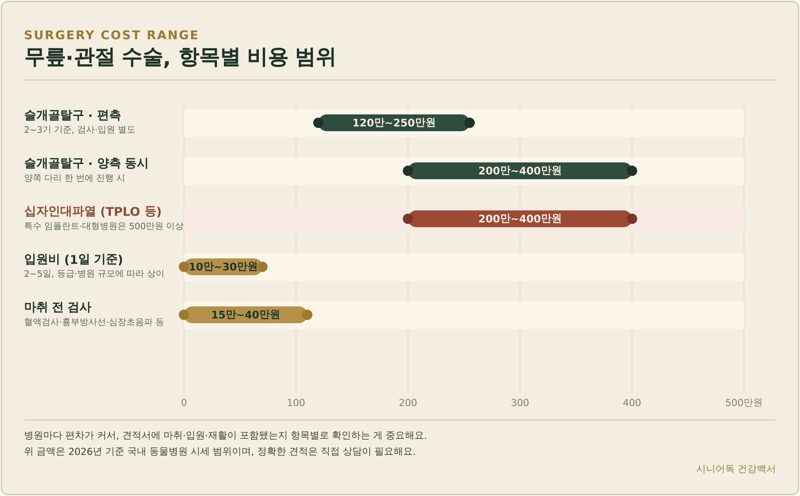
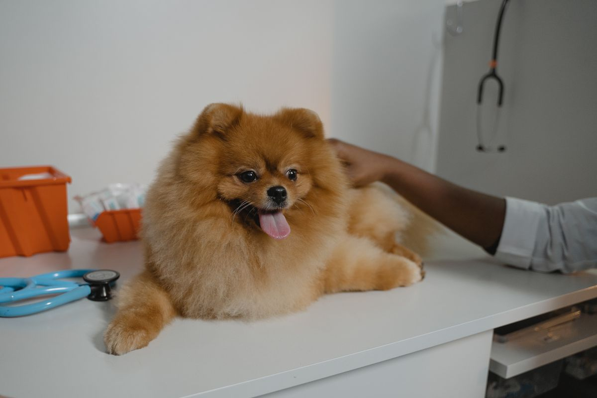
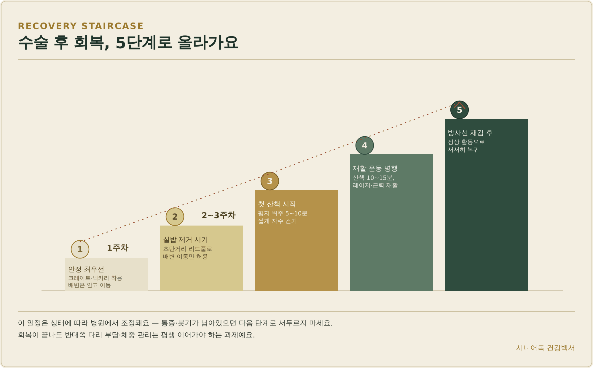
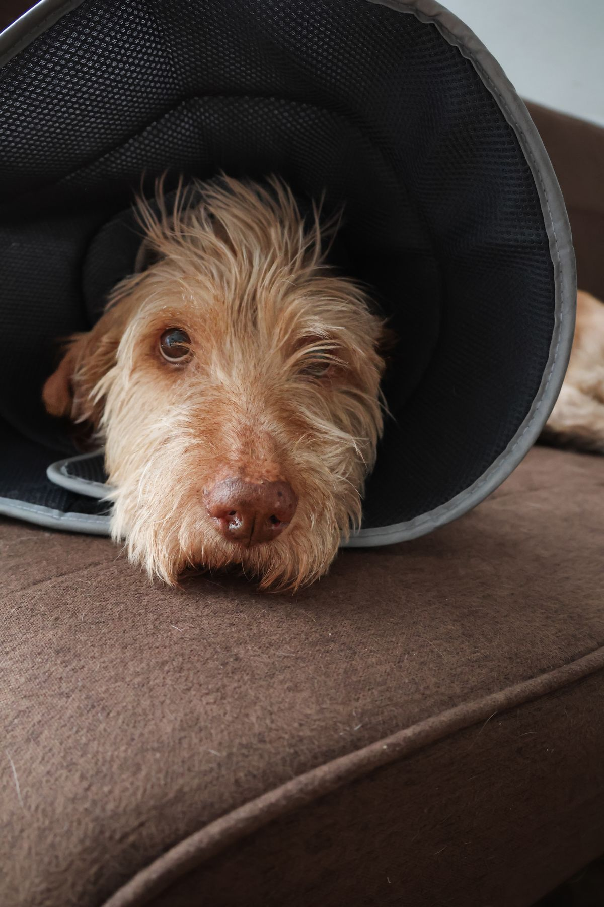
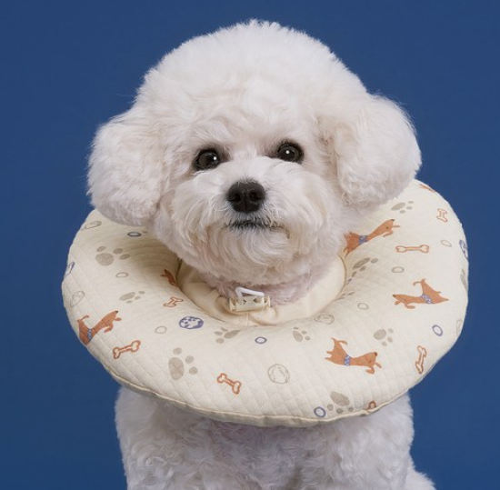
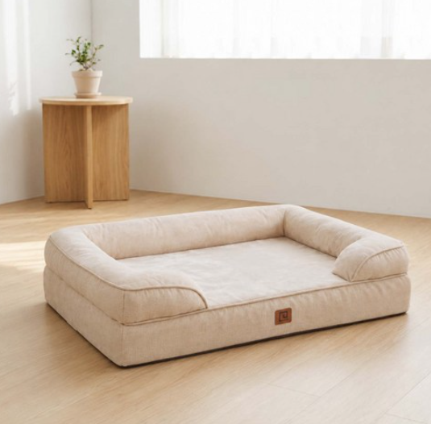

노령견 강아지
무릎·관절 수술 비용과 회복 가이드
소형 노령견에게 흔한 무릎 질환은 슬개골탈구와 십자인대파열이에요. 둘 다 방치하면 관절염으로 진행하고 반대쪽 다리 부담까지 늘어나기 때문에, 수술 여부를 결정해야 하는 순간이 오면 비용과 회복 기간부터 궁금해지실 거예요. 오늘은 등급별 수술 기준, 실제 비용대, 노령견 마취가 걱정되는 이유, 수술 후 주차별 회복 일정까지 근거를 갖고 정리해드릴게요.

· 슬개골탈구는 2기라도 증상이 반복되면, 3~4기는 무조건 수술을 권해요.
· 비용은 편측 120만~250만원, 양측 동시 200만~400만원, 십자인대파열도 200만~400만원대가 기본이에요.
· 노령견은 나이가 아니라 마취 전 검사 결과로 수술 가능 여부를 판단하고, 회복은 최소 8~12주를 잡아야 해요.
- 슬개골탈구·십자인대파열, 뭐가 다를까
- 등급별 수술 여부 기준
- 무릎·관절 수술 비용, 항목별로 얼마일까
- 노령견인데 마취해도 괜찮을까
- 수술 후 회복·재활, 주차별 일정
- 회복기에 도움되는 용품
- FAQ
슬개골탈구·십자인대파열, 뭐가 다를까
슬개골탈구는 무릎뼈(슬개골)가 제자리를 벗어나 안쪽 또는 바깥쪽으로 빠지는 질환이에요. 소형견에게 특히 흔한 선천적·구조적 문제이고, 오래 방치하면 관절 자체가 변형돼요. 십자인대파열은 무릎 관절을 지지하는 인대가 끊어지거나 늘어나는 질환으로, 후지 절뚝임과 통증을 일으켜요. 두 질환은 별개지만 연결돼 있어요 — 슬개골탈구가 오래 진행되면 무릎 관절이 불안정해지면서 십자인대파열로 이어지는 경우가 많아서, 소형 노령견이라면 둘 다 함께 알아두시는 게 좋아요.
등급별 수술 여부 기준
슬개골탈구는 1기부터 4기까지 나뉘어요. 1기는 손으로 밀었을 때만 일시적으로 빠졌다가 돌아오는 단계, 2기는 간헐적으로 빠졌다가 다리를 펴면 자연스럽게 들어가는 단계예요. 3기부터는 슬개골이 대부분 정상 위치를 벗어나 있고 관절 구조 자체가 변형돼 있으며, 4기는 손으로 힘을 줘도 원래 자리로 돌아가지 않고 만성 관절염으로 통증이 심해 다리를 접고 다니는 모습을 보여요.
수술은 보통 3~4기는 반드시 권유받고, 2기라도 증상이 반복되거나 점점 악화된다면 수술을 고려해요. 1~2기 중 증상이 가볍고 안정적이면 경과 관찰이나 체중 관리·관절 영양제 같은 내과적 관리로 버티는 경우도 있지만, 최종 판단은 보행 이상과 통증 정도를 직접 본 수의사와 상의해서 결정하세요.

무릎·관절 수술 비용, 항목별로 얼마일까
국내 동물병원 기준으로 슬개골탈구 편측 수술은 120만~250만원, 양쪽을 동시에 진행하면 200만~400만원 정도예요. 십자인대파열 수술(TPLO 등)도 200만~400만원대가 기본이고, 특수 임플란트를 쓰거나 대형 종합동물병원에서 진행하면 500만원을 훌쩍 넘기는 경우도 있어요.
| 항목 | 비용 | 비고 |
|---|---|---|
| 슬개골탈구 · 편측 | 120만~250만원 | 2~3기 기준, 검사·입원 별도 |
| 슬개골탈구 · 양측 동시 | 200만~400만원 | 양쪽 다리 한 번에 진행 시 |
| 십자인대파열 (TPLO 등) | 200만~400만원 | 특수 임플란트·대형병원은 500만원 이상도 |
| 입원비 (1일) | 10만~30만원 | 2~5일, 등급·병원 규모에 따라 상이 |
| 마취 전 검사 | 15만~40만원 | 혈액검사·흉부방사선·심장초음파 등 |
여기에 마취 전 검사와 입원비가 더해지면, 소형 노령견 편측 수술 한 건에 실제로는 150만~320만원 정도가 든다고 보시는 게 현실적이에요. 병원마다 견적 편차가 큰 이유는 마취·입원·재활이 포함되는지 여부가 다르기 때문이라, 견적서를 받으면 항목별로 뭐가 포함되고 빠졌는지부터 확인하세요.
노령견인데 마취해도 괜찮을까
나이만으로 수술 여부를 결정하지는 않아요. 다만 노령견은 심장·간·신장 기능과 대사 능력이 젊을 때보다 떨어져 있어서, 겉보기에 건강해 보여도 마취 부담이 실제로는 더 클 수 있어요. 그래서 수술 전 혈액검사, 흉부 방사선, 심장초음파·심전도, 혈압까지 확인한 뒤 마취 계획을 세우는 게 원칙이에요. 이 검사 결과가 안정적으로 나오면 나이가 많아도 수술을 진행하는 경우가 많고, 반대로 검사에서 심장·신장 수치가 애매하게 나오면 수술 시기를 조정하거나 마취 프로토콜 자체를 다르게 설계해요. 결국 “몇 살이라 위험하다”가 아니라 “이 검사 결과라 이렇게 진행한다”가 노령견 마취의 실제 기준이에요.
수술 후 회복·재활, 주차별 일정
수술 자체보다 수술 후 관리가 회복의 절반 이상을 차지한다고 봐도 될 정도로 중요해요. 특히 수술 직후 24시간은 응급 상황이 가장 많이 발생하는 시간대라, 3~4기·고령견·양측 수술이라면 하루 이틀 입원을 권하는 병원이 많아요.

| 시기 | 단계 | 활동 범위 |
|---|---|---|
| 1주차 | 안정 최우선 | 크레이트·넥카라 착용, 배변은 안고 이동 |
| 2~3주차 | 실밥 제거 시기 | 초단거리 리드줄로 배변 이동만 허용 |
| 4~6주차 | 첫 산책 시작 | 평지 위주 5~10분, 짧게 자주 걷기 |
| 6~8주차 | 재활 운동 병행 | 산책 10~15분, 레이저 치료·근력 재활 |
| 8~12주차 | 정상 활동 복귀 | 방사선 재검으로 뼈 유합 확인 후 서서히 복귀 |
레이저 치료 같은 재활은 아팠던 기억 때문에 수술한 다리를 잘 딛지 않으려는 아이들에게 특히 효과적이에요. 사용하지 않아 약해진 뒷다리 근육을 다시 키우는 게 목적이니, 병원에서 재활을 권하면 “굳이 안 해도 되는 옵션”이 아니라 회복 과정의 일부로 받아들이시는 걸 추천해요. 그리고 이 일정은 아이 상태에 따라 병원에서 조정되는 표준일 뿐이라, 통증이나 붓기가 남아있으면 다음 단계로 서두르지 마세요. 회복이 끝나도 반대쪽 다리 부담과 체중 관리는 평생 이어가야 하는 과제예요.

회복기에 도움되는 용품
회복기에는 절개 부위를 핥지 못하게 막아주는 넥카라, 관절에 부담을 덜어주는 정형외과 방석이 있으면 훨씬 수월해져요.

수술 부위 보호 쿠션 넥카라
딱딱한 플라스틱형과 달리 목화솜 쿠션 재질이라 목·가슴 자극이 적어요. 절개 부위를 핥거나 물어뜯지 못하게 막아주는, 회복 1~3주차에 특히 필수인 용품이에요.
도그아이 반려동물 목화솜 쿠션 넥카라 ↗
정형외과 메모리폼 방석
체중이 관절에 실리는 압력을 분산시켜주는 메모리폼 방석이에요. 회복기뿐 아니라 수술 후 평생 관리해야 하는 관절 부담을 줄이는 용도로도 계속 써주시면 좋아요.
EHEYCIGA 메모리폼 함유 정형외과 반려견 강아지방석 사계절용 ↗자주 묻는 질문
Q. 슬개골탈구를 수술 안 하고 방치하면 어떻게 되나요?
A. 관절 변형이 계속 진행돼 통증이 심해지고, 무게 중심이 반대쪽 다리로 쏠리면서 반대쪽 무릎에도 무리가 가요. 시간이 지날수록 관절염 진행과 십자인대파열 위험이 함께 커지기 때문에, 수술이 필요한 단계라면 미루는 게 아이에게 더 손해예요.
Q. 나이가 많아서 마취가 위험할까 봐 수술을 미루는 게 나을까요?
A. 나이 자체보다 마취 전 검사 결과가 기준이에요. 혈액검사·흉부방사선·심장초음파 결과가 안정적이면 노령견도 수술을 진행하는 경우가 많고, 오히려 수술을 미루다가 관절염이 심해지면 나중에 더 위험한 상태에서 수술하게 될 수 있어요.
Q. 수술한 다리가 다시 탈구될 수 있나요?
A. 재발 가능성은 있어요. 특히 회복기에 무리한 활동을 하거나 체중 관리가 안 되면 재발 위험이 올라가요. 그래서 8~12주 회복 기간을 충분히 지키고, 회복 이후에도 체중·산책 강도를 꾸준히 관리하는 게 중요해요.